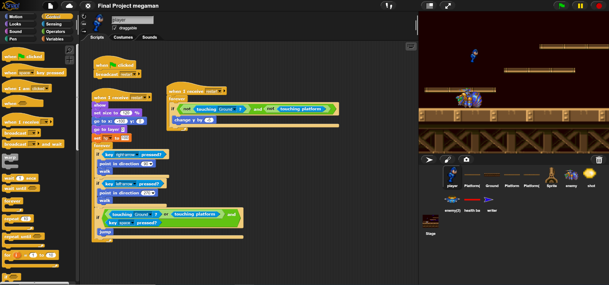

CS1-2 is an introductory course in computer programming and software development.

The first semester is focused
on enjoying being creative with programming while learning the basics in a visual block-based programming
environment called  Students build several
projects including Pong, a platform game drawing inspiration from Super Mario Bros., and a project completely of
their own design.
Students build several
projects including Pong, a platform game drawing inspiration from Super Mario Bros., and a project completely of
their own design.
Second semester, we begin learning web development. Beginning with some basic Windows and keyboarding skills,
students
learn to develop webpages in HTML. Then, students learn to improve the look of our webpages using CSS. Finally,
students
learn how to control how our webpages using JavaScript.